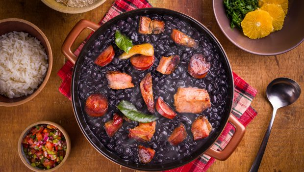

O que te faz feliz?
Você já ouviu falar que “Comer é um dos prazeres da Vida”? Quando comemos nosso cérebro libera substâncias químicas da alegria, e por esse motivo nos sentimos bem.
Muitos momentos que passamos com a família e amigos se dão ao redor de uma mesa, com uma grande variedade de comidas e bebidas.
Além do gozo de estar com pessoas queridas, vem o prazer de ingerir determinados alimentos que aumentam a nossa sensação de felicidade.
• Por isso, nós da Cozinha Brás Cuba temos a satisfação de proporcionar esses momentos à você e sua família.
Pratos Principais
Feijoada
